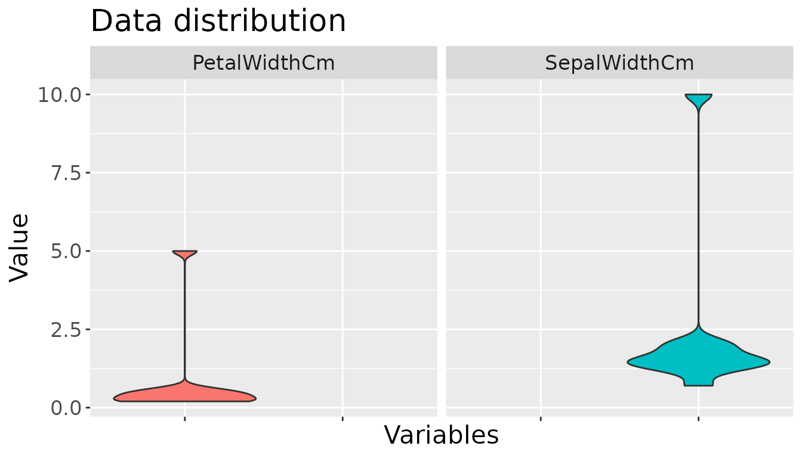

How to use routlierutils
Karanpreet Kaur, Linhan Cai, Qingqing Song
my-vignette.RmdHere we will demonstrate how to use py_outliers_utils to deal with the outliers in a dataset and plot the distribution of the dataset:
Create a dataframe
We need to create a dataframe to work with.
df <- data.frame(SepalLengthCm = c(5.1, 4.9, 4.7, 5.5, 5.1, 10, 54, 5.0, 5.2, 5.3, 5.1),
SepalWidthCm = c(1.4, 1.4, 10, 2.0, 0.7, 1.6, 1.2, 1.4, 1.8, 1.5, 2.1),
PetalWidthCm = c(0.2, 0.2, 0.2, 0.3, 0.4, 0.5, 0.5, 0.6, 0.4, 0.2, 5))
df
#> SepalLengthCm SepalWidthCm PetalWidthCm
#> 1 5.1 1.4 0.2
#> 2 4.9 1.4 0.2
#> 3 4.7 10.0 0.2
#> 4 5.5 2.0 0.3
#> 5 5.1 0.7 0.4
#> 6 10.0 1.6 0.5
#> 7 54.0 1.2 0.5
#> 8 5.0 1.4 0.6
#> 9 5.2 1.8 0.4
#> 10 5.3 1.5 0.2
#> 11 5.1 2.1 5.0Identify outliers
We can identify outliers using outlier_identifier. Note that this function will return a dataframe with the summary of the outlier identified by the method, with an additional column having if row has outlier or not if return_df = True.
outlier_identifier(df, columns=c('SepalWidthCm', 'PetalWidthCm'), return_df=FALSE)
#> SepalWidthCm PetalWidthCm
#> outlier_count 1 1
#> outlier_percentage 9.09% 9.09%
#> mean 2.28 0.77
#> median 1.5 0.4
#> std 2.59 1.41
#> lower_range <NA> <NA>
#> upper_range 10 5Trim outliers
We can trim outliers using trim_outliers. This function will return a dataframe which the outlier has already process by the chosen method.
trim_outliers(df,identifier='Z_score', method='trim')Visualize outliers
We can trim outliers using visualize_outliers. This function will return a ggplot of data distribution with given method.
visualize_outliers(df, columns=c("SepalWidthCm", "PetalWidthCm"), type="violin")